CEE 5810 midterm: Ammar's run (default room, people/ammar.toml). Live demo: uv run python -m demo.interactive --person ammar.
Walkthrough notebook: notebooks/lidar_walkthrough.html. Everything on this page is regenerated by
uv run python -m experiments.run_all --person ammar.
1. The sensor in action
Slider demo, scripted: drive the sensor, thicken the fog, rotate the mirror.
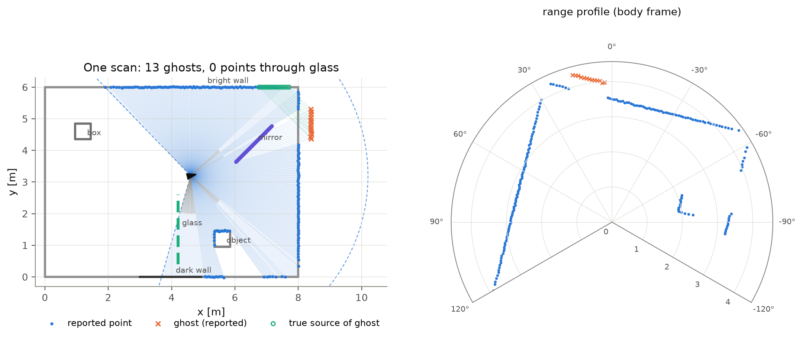
One scan explained: reported points, mirror ghosts (orange ✕) and their true sources, see-through glass.Driving through the room while the box moves: ghosts behind the mirror, see-through glass.E1: the sensor slides along a straight path; the polar range profile updates.
2. Sensor state → measurements
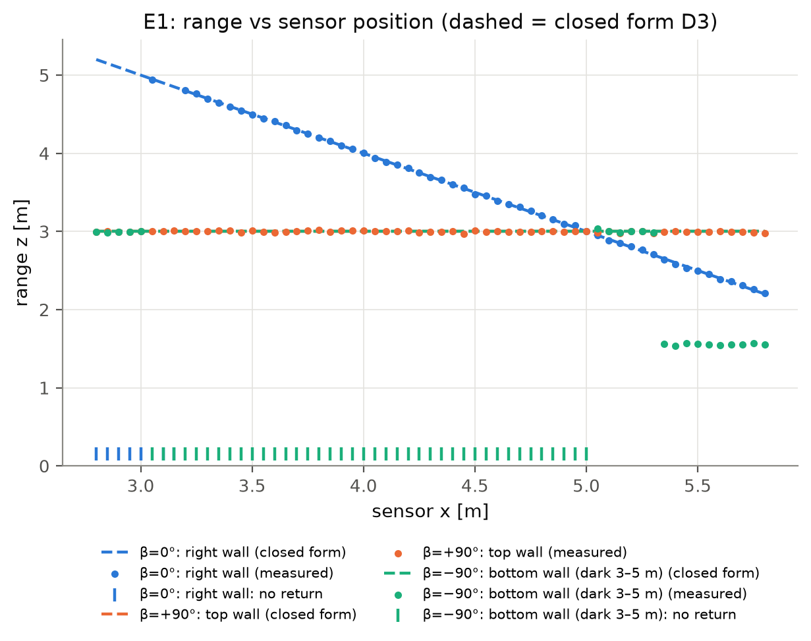
E1: range vs position matches the closed form (dashed). Moving parallel to a wall changes nothing.
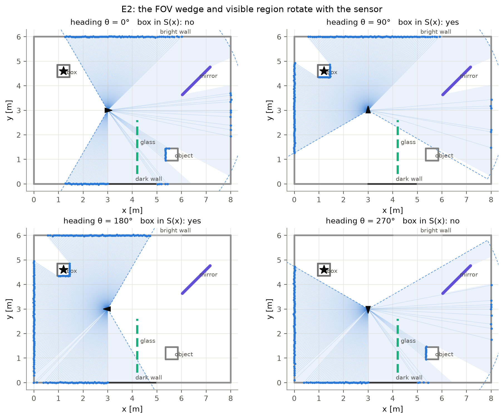
E2: the 240° FOV and the visible region rotate with the heading.
3. Target state & features → measurements
E3: the moving box enters and leaves the beams.
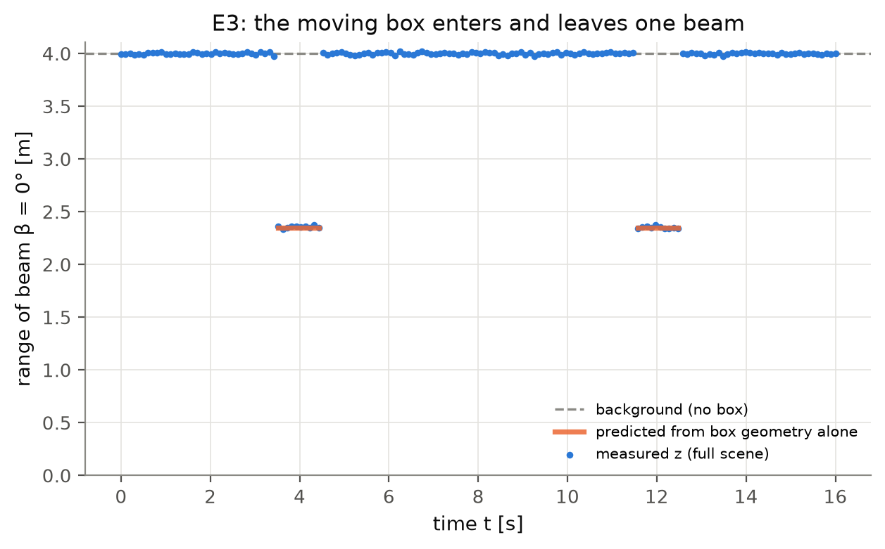
E3: predicted vs measured box-on-beam intervals coincide.
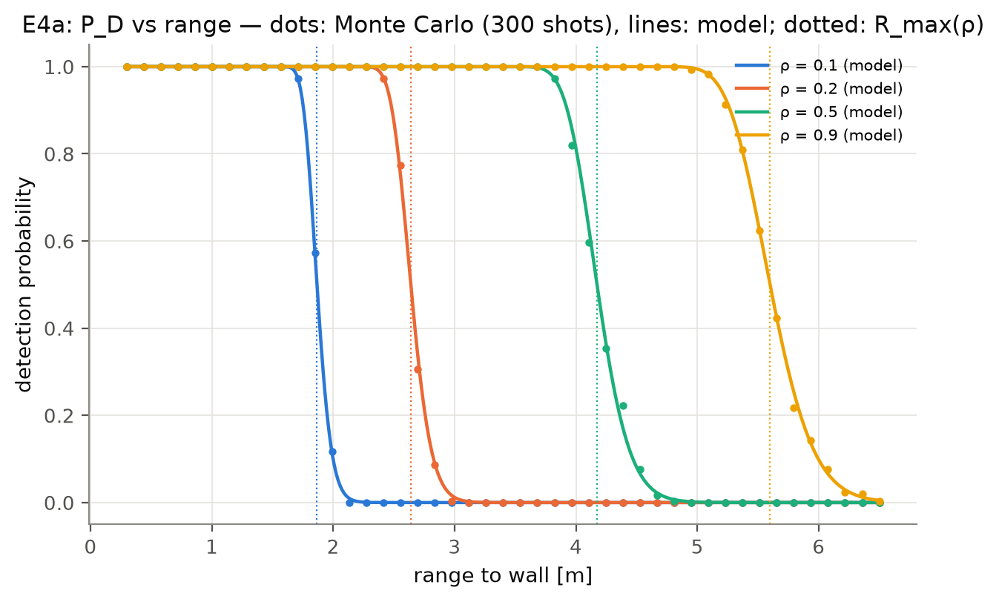
E4: detection probability vs range for four reflectivities (dots MC, lines model).
4. Mirror and glass
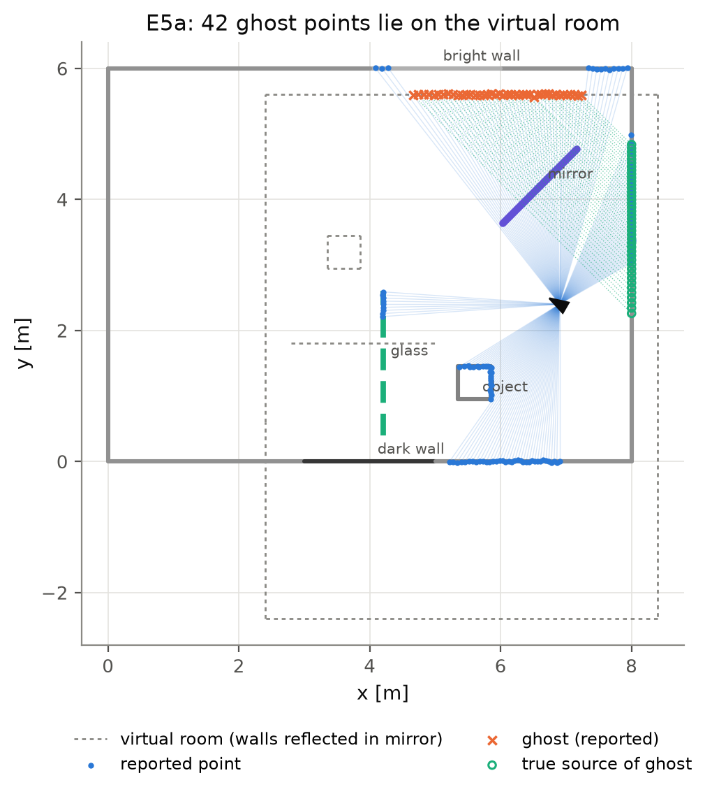
E5: ghost points sit exactly on the mirror image of the room (the virtual room).
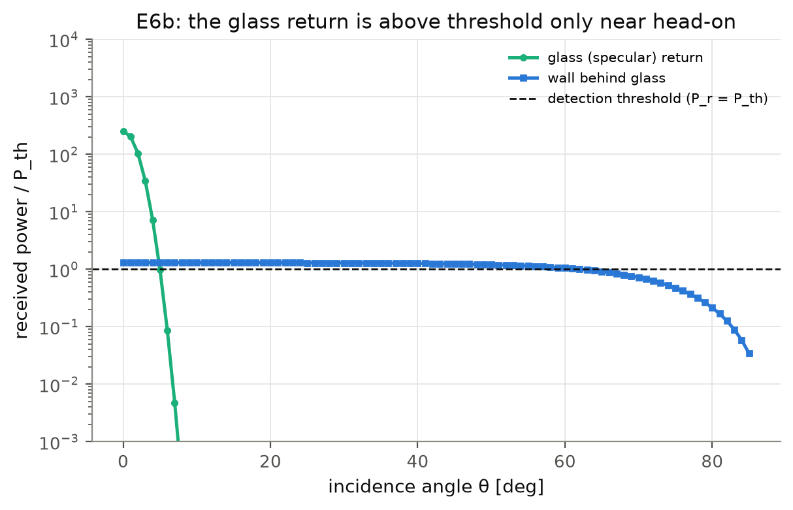
E6: the glass return beats the threshold only within ~4° of head-on.
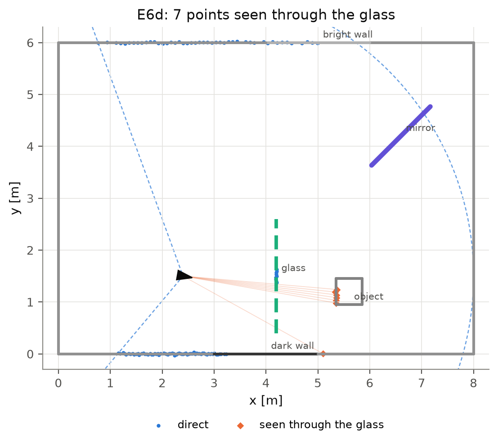
E6: points the LiDAR sees straight through the glass.
5. Operating conditions (fog)
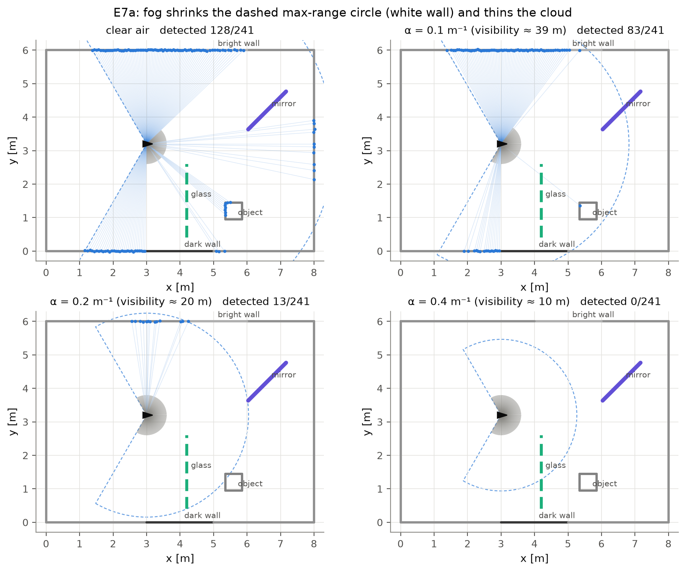
E7: the same scan at four fog densities.
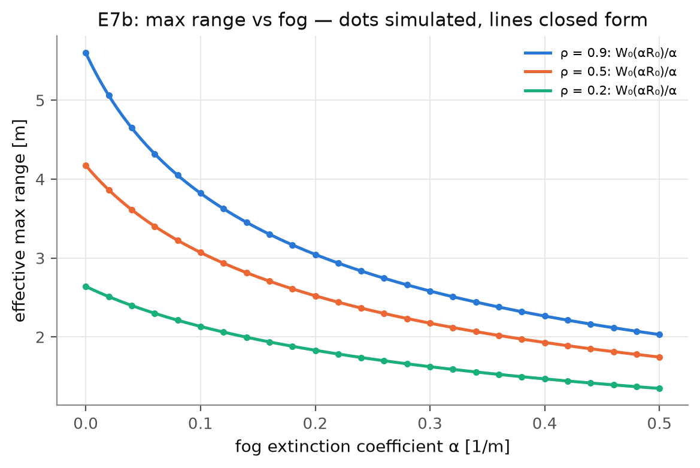
E7: max range vs fog follows W₀(αR₀)/α.
6. Upgrade: localization with the sensor model
E11: three particle filters on the same data — naive, naive + robust mixture, physics-aware.
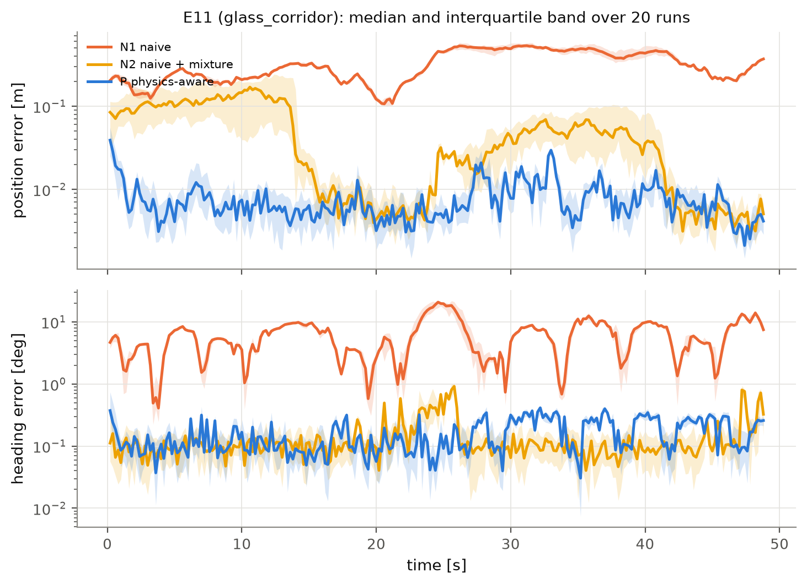
E11: position error over 20 runs. The naive filters drift where the only information is behind the glass.
7. Upgrade: 3D LiDAR
E12: 3D point cloud near the mirror (orange = ghosts).
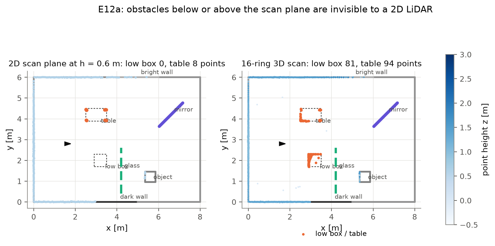
E12: a 2D LiDAR misses the low box and the table top; the 16-ring LiDAR sees them.
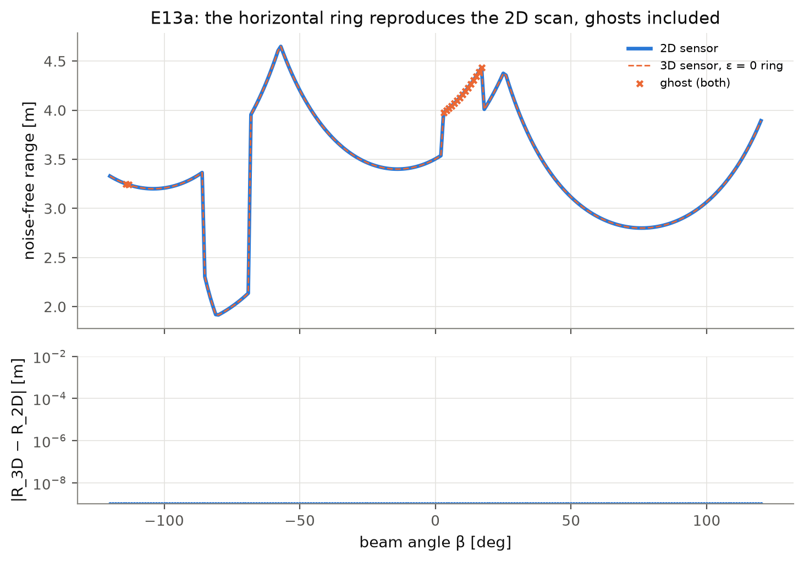
E13: the 2D model is exactly the horizontal slice of the 3D model.